Please refer to COPYRIGHT.TXT for the copyright notice.
MIDITrail: https://www.yknk.org/miditrail/ (
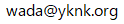
)
1. はじめに
2. 動作環境
3. 導入方法
4. 使用方法
5. 制限事項
6. FAQ
7. カスタマイズ
8. 補遺
9. 著作権とライセンス
10. 履歴
MIDITrailは、MIDIデータを三次元可視化するMIDIプレーヤーです。
FPSライクな操作で空間を移動することにより、演奏を聴くだけでなく、見て楽しむことができます。
標準MIDIファイルFormat0/1、および複数ポート出力に対応しています。
MIDITrailはWindows, macOS, iOSに対応しています。
スクリーンショット：ピアノロール3D
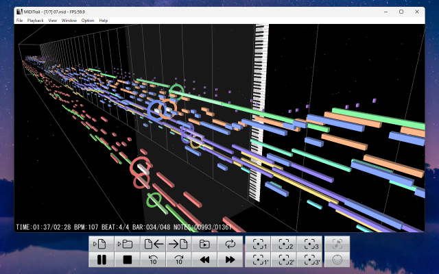
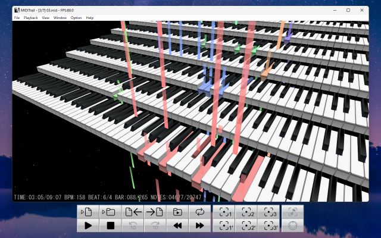
対応OS： Windows 10 / 11
DirectX 11 に対応したグラフィックチップが必要です。
スムーズな画面表示を実現するため、高性能グラフィックチップが搭載されたPCの使用を推奨します。
MIDIデータに含まれるノート（音符）の数が多くなるほど、より性能の高いグラフィックチップが必要になります。
PCの性能が許す限り、大画面でお楽しみください。
配布されている圧縮ファイルを任意のフォルダに展開して、MIDITrail.exeを開いてください。
圧縮ファイル名
MIDITrail-Ver.X.X.X-Windows.zip -- MIDITrail 32bit版
MIDITrail-Ver.X.X.X-Windows64.zip -- MIDITrail 64bit版
MIDITrailを起動したら、最初にMIDI出力ポートの設定を行ってください。
「Option」メニューから「MIDI OUT...」を選択すると、MIDI OUT設定ダイアログが表示されます。
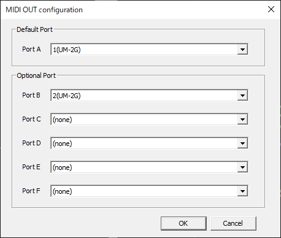
[Port A] ポートA
ポートAの出力先は必ず設定してください。通常のMIDIデータはポートAを使って演奏されます。
[Port B,C,D,E,F] ポートB,C,D,E,F
複数ポートを利用するMIDIデータを再生する場合は、ポートB以降の出力先を設定してください。
複数ポートを利用するMIDIデータを再生しない場合は、ポートB以降の出力先を設定する必要はありません。
なお、複数ポートを利用するMIDIデータを再生するには、
複数ポート対応のMIDIインターフェースと音源を用意する必要があります。
MIDITrail.exeを展開したフォルダを削除してください。 レジストリは使用していません。
ふみぃ氏が公開しているレコンポーザ変換DLL(RCPCV.DLL)を別途用意することにより、
レコンポーザのデータファイル(*.rcp *.r36 *.g36)を読み込めるようになります。
RCPCV.DLLを公開サイト(Vector)からダウンロードして、MIDITrail.exeと同じフォルダに配置してください。
なおMIDITrail(32bit版)はRCPCV.DLLを利用できますが、MIDITrail(64bit版)はRCPCV.DLLを利用できません。
RCPCV.DLL http://www.vector.co.jp/soft/win95/art/se114143.html
「File」メニューから「Open File...」を選択すると、ファイル選択ダイアログが表示されます。
ここで標準MIDIファイル(*.mid)を選択してください。
また、標準MIDIファイル(*.mid)をMIDITrailのウィンドウにドラッグ＆ドロップすることにより、
ファイルを読み込むことができます。
RCPCV.DLLを導入している場合は、レコンポーザのデータファイル(*.rcp *.r36 *.g36)を読み込むことができます。
詳しくは「3.(4) レコンポーザのファイル読み込み対応」を参照してください。
次のキーを押下するか、「Playback」メニューを利用してください。
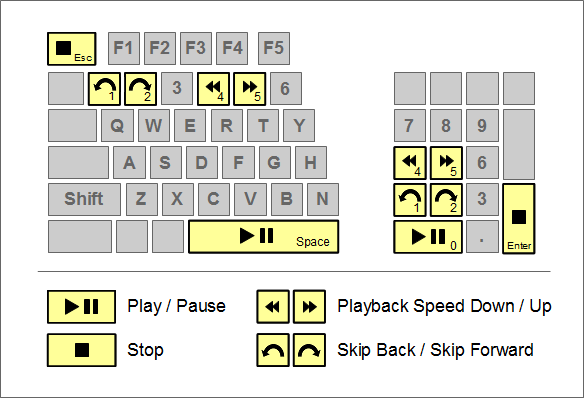
| キー | 動作 |
|---|---|
| SPACE | 演奏の開始／一時停止／再開 |
| ESC | 演奏の停止 |
| 12 | スキップ：後方／前方 |
| 45 | 再生スピード：ダウン／アップ |
| F2 | 2倍速再生 |
MIDITrailは、フォルダに格納されているMIDIデータファイルを順番に開くことができます。
ファイルを開く順番は、ファイル名の昇順です。
「File」メニューの「Open Folder...」を選択すると、フォルダ選択ダイアログが表示されます。
ここで標準MIDIファイル(*.mid)が格納されているフォルダを選択してください。
フォルダをMIDITrailのウィンドウにドラッグ＆ドロップすることもできます。
「File」メニューから「Previous File」「Next File」を選択すると、ファイルを切り替えることができます。
次のショートカットキーも利用できます。
| キー | 動作 |
|---|---|
| CTRL + B CTRL + P |
前のファイルを開く |
| CTRL + N | 次のファイルを開く |
「Playback」メニューの「Foler Playback」を選択すると、 MIDITrailは演奏終了後、自動的に次のファイルを開いて演奏を開始します。
MIDIファイルを読み込んだ直後、および演奏中に、三次元空間内を移動して、
あらゆる方向からMIDIデータを眺めることができます。
FPS（一人称シューティング）ゲームでおなじみの操作で、三次元空間内を移動します。
初めてこの操作を体験する方は違和感を持つかもしれませんが、
一度慣れてしまうと非常に快適です。
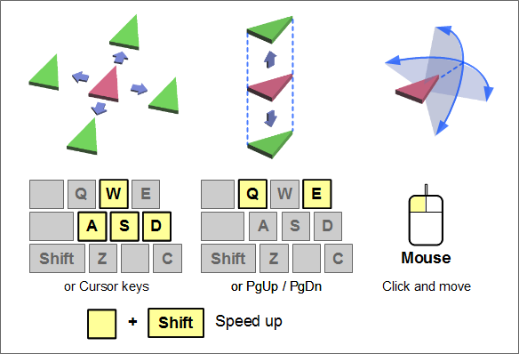
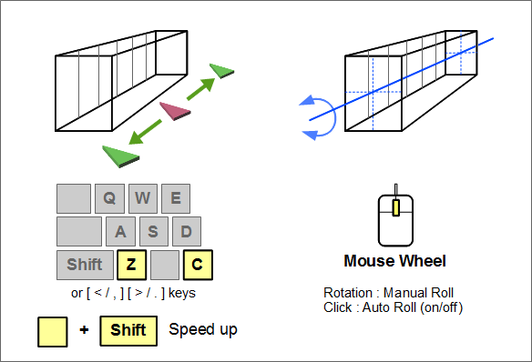
画面をクリックすると、マウスによる視線移動モードになり、マウスカーソルが消えます。
マウスの移動によって、視線方向を制御できます。
もう一度クリックすると、視線移動モードが解除されます。
またマウスホイールを操作することにより、ピアノロールを回転させることができます。
左手の人差し指をD、中指をW、薬指をA、に載せて操作します。
| キー | 動作 |
|---|---|
| WS | 前後に移動します。 |
| AD | 左右に移動します。 |
| QE | 上昇下降します。 |
| ZC | MIDIデータ進行方向に沿って移動します。 （ピアノロールレインの場合はキーボードに沿って移動します） |
|
SHIFT + [WS] SHIFT + [AD] SHIFT + [QE] SHIFT + [ZC] |
SHIFTキーを押しながら移動キーを押すと、より高速に移動することができます。 |
|
CTRL + [WS] CTRL + [AD] |
視線方向を制御します。 |
カーソルキーでも移動可能です。 マウスを左手で操作する方は、こちらの方が便利かもしれません。
| キー | 動作 |
|---|---|
| ↑↓ | 前後に移動します。 |
| ←→ | 左右に移動します。 |
| PgUpPgDn | 上昇下降します。 |
| ,. | MIDIデータ進行方向に沿って移動します。 （ピアノロールレインの場合はキーボードに沿って移動します） |
|
SHIFT + [↑↓] SHIFT + [←→] SHIFT + [PgUpPgDn] SHIFT + [,.] |
SHIFTキーを押しながら移動キーを押すと、より高速に移動することができます。 |
|
CTRL + [↑↓] CTRL + [←→] |
視線方向を制御します。 |
Viewメニューから「Viewpoint 1 / 2 / 3」を選択するか、次のキーを押すと、標準の視点に移動することができます。
| キー | 動作 |
|---|---|
| 7 | 標準視点1に移動する |
| 8 | 標準視点2に移動する |
| 9 | 標準視点3に移動する |
Viewメニューから「My Viewpoint 1 / 2 / 3」を選択するか、次のキーを押すと、
あらかじめユーザが保存しておいた視点に移動することができます。
現在の視点を保存するには、Viewメニューから「Save My Viewpoint 1 / 2 / 3」を選択するか、
次のキーを押します。
| キー | 動作 |
|---|---|
| CTRL + 7 | 私の視点1に移動する |
| CTRL + 8 | 私の視点2に移動する |
| CTRL + 9 | 私の視点3に移動する |
| SHIFT + CTRL + 7 | 私の視点1を保存する |
| SHIFT + CTRL + 8 | 私の視点2を保存する |
| SHIFT + CTRL + 9 | 私の視点3を保存する |
「View」メニューから「Window size...」を選択すると、ウィンドウサイズ設定ダイアログが表示されます。
お好みのウィンドウサイズを選択してOKボタンを押してください。
なお、演奏中／一時停止中にウィンドウサイズの変更はできません。
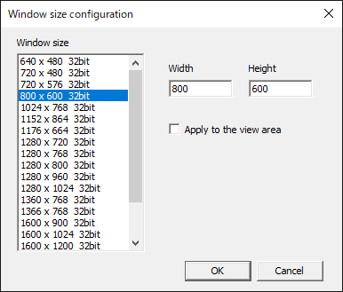
お使いのPCによって、選択できるウィンドウサイズが変わります。
任意のウィンドウサイズを指定したい場合は、「Width」「Height」にサイズを記入してください。
「Aplly to the view area」を選択すると、設定値が画像領域のサイズに反映されます。
「View」メニューから「Full Screen」を選択すると、ウィンドウ表示とフルスクリーン表示を
切り替えることができます。
F11キーを押すことで、表示を切り替えることも可能です。
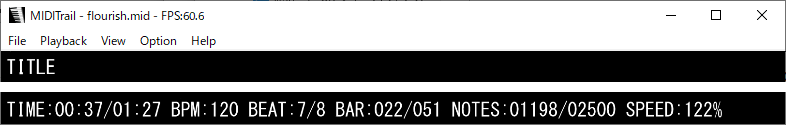
| 項目 | 内容 |
|---|---|
| FPS | 1秒間あたりの画面描画回数(Frame Per Second) |
| TITLE | 曲名 |
| TIME | 演奏時間 |
| BPM | テンポ (Beats Per Minute) |
| BEAT | 拍子記号 |
| BAR | 小節番号 |
| NOTES | ノート数（音符の数） |
| SPEED | 再生スピード |
「View」メニューでビューモードを選択することができます。 演奏中／一時停止中にビューモードの変更はできません。
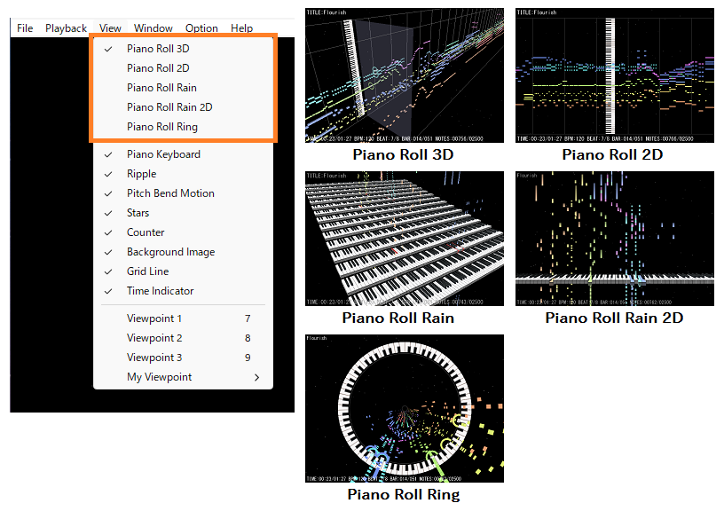
「View」メニューで表示／エフェクトの有無を切り替えることができます。
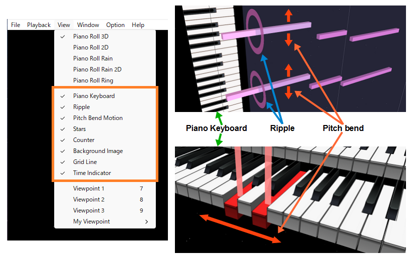
発音中のピアノロールバーは、ピッチベンドの変化に合わせて上下または左右に移動します。
MIDIアニメ作品の中には、ピッチベンドを用いて、
音の高さを変えずにバーの表示位置を意図的にずらしているものがあります。
MIDIアニメ作品が正常に表示されない場合は、バーの表示位置を固定するために、
ピッチベンドのエフェクトをOFFにしてください。
MIDI INデバイスで受信したデータをリアルタイム表示することができます。
「Option」メニューから「MIDI IN...」を選択すると、MIDI IN設定ダイアログが表示されます。
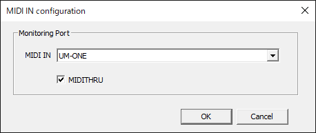
モニタリングするMIDI INデバイスを選択してください。
MIDI INで受信したデータをそのままMIDI OUTに出力する場合は、MIDITHRUを選択してください。
モニタリングを開始するには、「Playback」メニューから「Start Monitoring」を選択してください。
なお、MIDITrailはMIDI INで受信したデータを保存することはできません。
「Option」メニューから「Graphic...」を選択すると、グラフィック設定ダイアログが表示されます。
演奏中／一時停止中にグラフィック設定の変更はできません。
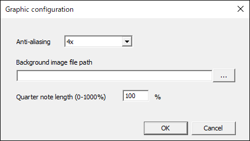
[Anti-aliasing] アンチエイリアシング
アンチエイリアシングを有効にすると、ギザギザ（ジャギー）が低減し、より綺麗な画像が表示されます。
しかしアンチエイリアシングの処理は重いため、高いレベルを選択するとパフォーマンスが落ちる可能性があります。
PCがアンチエイリアシングに対応していない場合は「Not supported」と表示されます。
[Background image file path] 背景画像ファイルパス
背景画像を表示したい場合は、画像のファイルパスを指定してください。
画像ファイルの拡張子は、".jpg"または".png"としてください。
[Quarter note length] 四分音符の長さ
ピアノロールの四分音符の長さを指定します。
0%から1000%を指定できます。デフォルトは100%です。
画面に表示する色を設定することができます。
「Option」メニューから「Color...」を選択すると、カラー設定ダイアログが表示されます。
カラーパレットを選択して好みの配色に変更することができます。
演奏中／一時停止中にカラー設定の変更はできません。
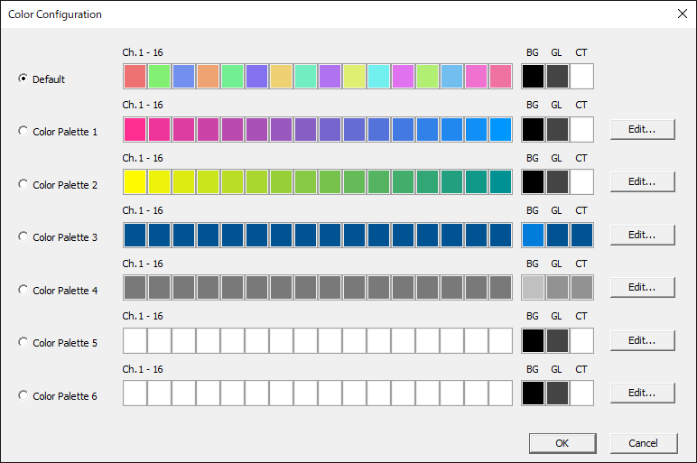
「Edit...」ボタンをクリックすると、カラーパレット編集ダイアログが表示されます。
カラーパレットをカスタマイズすることができます。
デフォルトのカラーパレットを編集することはできません。
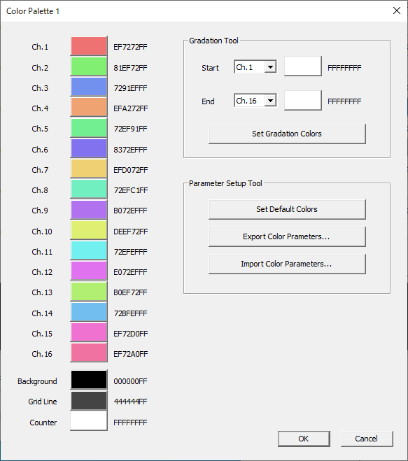
グラデーションツール
[Set Gradation Colors] ユーザが指定した開始チャンネルから終了チャンネルに対して、グラデーションカラーを設定することができます。
パラメータセットアップツール
[Set Default Colors] デフォルトカラーを設定します。
[Export Color Parameters...] カラーパラメータを出力します。出力されたパラメータをテキストエディタで編集することができます。
[Import Color Parameters...] カラーパラメータを入力します。テキストエディタで編集したパラメータを入力することができます。一部のパラメータだけを入力することも可能です。
コマンドラインからMIDITrailを起動する場合は、以下の引数を指定できます。
MIDITrail.exe [-p] [-q] ["path\to\file"]
| 引数 | 詳細 |
|---|---|
| -p | MIDITrail起動直後に指定されたMIDIファイルの再生を開始します。 "path\to\file"が指定されていない場合は無視されます。 |
| -q | MIDIファイルの再生終了後にMIDITrailを終了します。-pオプションが有効でない場合は無視されます。 |
| path\to\file | MIDIファイルパスを指定します。 空白を含むパスを指定する場合はダブルクォーテーションで囲んでください。 |
MIDITrailのショートカットにMIDIファイルをドロップすると、MIDITrail起動時にファイルを開くことができます。
XInput対応のゲームコントローラーを用いて操作することができます。
| ボタン / スティック | 操作 |
|---|---|
| START ボタン | 再生/一時停止 |
| A ボタン | 再生/一時停止 |
| B ボタン | 停止 |
| X ボタン | 視点移動：下降 |
| Y ボタン | 視点移動：上昇 |
| LB/RB ショルダーボタン | 視点切り替え |
| LT/RT トリガーボタン | 再生スキップ |
| 十字キー | 視点移動：前後左右 |
| 左スティック | 視点移動：前後左右 |
| 右スティック | 視線方向 |
注意：MIDITrailはDirectInputのゲームコントローラーをサポートしていません。
アプリケーションが発音を指示してから実際に音が鳴るまでに遅延が生じる音源 （ソフトウェア音源など）を利用する場合、演奏と画面表示がずれる可能性があります。
MIDITrailは、MIDIデータに含まれる全ノートをリアルタイムレンダリングします。
このため、全ノート数が多いMIDIデータほど画面描画処理の負荷が高くなります。
クラシック音楽のように、演奏時間が長く、全ノート数が数万個に達するMIDIデータを
快適に鑑賞するには、高性能なグラフィックチップを搭載したPCを使用してください。
標準MIDIファイルの仕様には、複数ポート出力への対応方法は定義されていません。
しかし特定のパラメータを用いて複数ポート出力に対応する方式(*1)が存在します。
MIDITrailは、この方式に沿って複数ポート出力対応を行っていますが、
MIDIデータによってはうまく再生できない可能性があります。
(*1) メタイベント(FF 21 01 pp)を出力先ポート番号の切替とみなします。
デルタタイムが実時間タイムコードで表現されているMIDIデータには対応していません。
お使いのPCがDirectX 11に対応していない場合にこのエラーが発生します。
グラフィックドライバが最新であること、およびGPUがDirectX 11 Feature Level 10.0以降に対応していることを確認してください。
ウィンドウサイズを小さくして、アンチエイリアシングをOFFにしてください。レンダリングの負荷が減少します。
ウィンドウタイトルに表示されているFPS（1秒間あたりの画面描画回数）の値が60付近を維持できていない場合、
グラフィックチップの性能が不足しています。
なお、MIDIデータに含まれる音符の数が多いほど、描画処理が重くなります。
PCの処理能力を確認するために、音符の数が少ないMIDIデータを再生してみてください。
それでも改善されない場合は、高速なグラフィックチップが搭載されたPCを使用してください。
次のファイルをテキストエディタで編集することにより、ウィンドウサイズをカスタマイズできます。
Windows 10 / 11 の場合 C:\Users\（ユーザー名）\AppData\Roaming\yknk\MIDITrail\View.ini
テキストエディタでView.iniを開き、WidthとHeightの値を書き換えてください。
[WindowSize] Width=800 Height=600
すいません。仕様です。
DirectX 11デバイスの作成に失敗した場合にこのエラーが発生します。
グラフィックドライバが最新であることを確認してください。
DirectX診断ツール(dxdiag.exe)の「ディスプレイ」タブでDirectXの対応状況を確認できます。
設定ファイルを編集することにより、波紋の大きさを変更することができます。
詳しくは「7. カスタマイズ - (2) ピアノロール表示のカスタマイズ」を参照してください。
RippleHeight, RippleWidth の値を大きくします。
MIDITrailインストール先のconfフォルダにある設定ファイルをテキストエディタで編集することにより、 自分の好みに合わせてカスタマイズすることができます。
| ファイル | 内容 |
|---|---|
| conf/Player.ini | プレイヤー設定 |
| conf/PianoRoll3D.ini | ビューモード設定：Piano Roll 3D |
| conf/PianoRoll2D.ini | ビューモード設定：Piano Roll 2D |
| conf/PianoRollRain.ini | ビューモード設定：Piano Roll Rain |
| conf/PianoRollRain2D.ini | ビューモード設定：Piano Roll Rain 2D |
| conf/PianoRollRing.ini | ビューモード設定：Piano Roll Ring |
| conf/PianoRoll3DLive.ini | ビューモード設定：Piano Roll 3D（MIDI IN モニタ） |
| conf/PianoRoll2DLive.ini | ビューモード設定：Piano Roll 2D（MIDI IN モニタ） |
| conf/PianoRollRainLive.ini | ビューモード設定：Piano Roll Rain（MIDI IN モニタ） |
| conf/PianoRollRain2DLive.ini | ビューモード設定：Piano Roll Rain 2D（MIDI IN モニタ） |
| conf/PianoRollRingLive.ini | ビューモード設定：Piano Roll Ring（MIDI IN モニタ） |
[PlayerControl]セクションを編集します。
| 値名 | 内容 |
|---|---|
| AllowMultipleInstance | 二重起動許可（0:許可しない / 1:許可する） |
| AutoPlaybackAfterOpenFile | ファイルオープン後の自動演奏開始（0:無効 / 1:有効） |
[ViewControl]セクションを編集します。
| 値名 | 内容 |
|---|---|
| ShowFileName | タイトルの代わりにファイル名を表示する（0:無効 / 1:有効） |
[SkipControl]セクションを編集します。
| 値名 | 内容 |
|---|---|
| SkipBackTimeSpanInMsec | 後方スキップ時間間隔 (msec) |
| SkipForwardTimeSpanInMsec | 前方スキップ時間間隔 (msec) |
| MovingTimeSpanInMsec | スキップアニメーション時間間隔 (msec) |
[PlaybackSpeedControl]セクションを編集します。
| 値名 | 内容 |
|---|---|
| SpeedStepInPercent | 再生スピード変化間隔 (%) |
| MaxSpeedInPercent | 再生スピード最大値 (%) |
[Playback]セクションを編集します。
| 値名 | 内容 |
|---|---|
| DelayBetweenSongsInMsec | 曲間待機時間 (msec)（0 - 10000） |
[FirstPersonCam]セクションを編集します。
| 値名 | PR-3D/2D | PR-Rain/2D | PR-Ring | 内容 |
|---|---|---|---|---|
| VelocityFB | o | o | o | 前後方向の移動速度 (m/s) |
| VelocityLR | o | o | o | 左右方向の移動速度 (m/s) |
| VelocityUD | o | o | o | 上下方向の移動速度 (m/s) |
| VelocityPT | o | o | o | 視線の角速度 (degree/s) |
| AcceleRate | o | o | o | SHIFTキー押下時の加速倍率（通常速度のn倍） |
| VelocityAutoRoll | o | o | o | ピアノロール自動回転角速度 (degree/s) |
| VelocityManualRoll | o | o | o | ピアノロール手動回転角速度 (degree/s) |
[Scale]セクションを編集します。
| 値名 | PR-3D/2D | PR-Rain/2D | PR-Ring | 内容 |
|---|---|---|---|---|
| QuarterNoteLength | o | o | o | 四分音符の長さ(m) |
| NoteBoxHeight | o | x | o | ノートボックスの高さ(m) |
| NoteBoxWidth | o | x | o | ノートボックスの幅(m) |
| NoteStep | o | x | x | ノート間隔(m) |
| ChStep | o | x | o | チャンネル間隔(m) |
| RippleHeight | o | x | o | 波紋の高さ(m) |
| RippleWidth | o | x | o | 波紋の幅(m) |
| PictBoardRelativePos | o | x | o | ピクチャボードと再生面の直交位置 0.0 画像の左端が再生面と直交する 0.5 画像の中央が再生面と直交する 1.0 画像の右端が再生面と直交する |
| LiveNoteLengthPerSecond | o | o | o | モニタ表示の1秒あたりのノートの長さ(m) |
| LiveMonitorDisplayDuration | o | o | o | モニタ表示の時間間隔(msec) |
| RingRadius | x | x | o | リングの半径(m) |
QuarterNoteLengthの値を小さくすると、箱庭的なMIDIデータ鑑賞ができます。
[Color]セクションを編集します。
RGBAのAは透明度です。
| 値名 | PR-3D/2D | PR-Rain/2D | PR-Ring | 内容 |
|---|---|---|---|---|
| NoteColorType | o | o | o | ノートの色種別 CHANNEL: チャンネル単位で色を割り当てる (Ch-XX-NoteRGBA) SCALE: 音階単位で色を割り当てる (Scale-XX-NoteRGBA) |
| Ch-01-NoteRGBA Ch-02-NoteRGBA ・・・ Ch-16-NoteRGBA | o | o | o | ピアノロールバーのチャンネル別の色(RGBA) |
| Scale-01-NoteRGBA Scale-02-NoteRGBA ・・・ Scale-12-NoteRGBA | o | o | o | ピアノロールバーの音階別の色(RGBA) 01=C,02=C#,03=D,04=D#,05=E,06=F,07=F#,08=G,F09=G#,10=A,11=A#,12=B |
| GridLineRGBA | o | x | o | グリッド線と小節線の色(RGBA) RGBAのAが00の場合、線は消えます。 |
| PlaybackSectionRGBA | o | x | x | 再生面の色(RGBA) |
| CaptionRGBA | o | o | o | キャプション／カウンタの文字色(RGBA) |
| BackGroundRGB | o | o | o | 背景色(RGB) |
[ActiveNote]セクションを編集します。
| 値名 | PR-3D/2D | PR-Rain/2D | PR-Ring | 内容 |
|---|---|---|---|---|
| Duration | o | x | o | 発音によって光らせる時間間隔（ミリ秒）を指定します。 |
| WhiteRate | o | x | o | 発音開始時点の最大白色率を指定します。 0.0 ピアノロールバーの色と同じ（光らない） 0.5 ピアノロールバーの色と白の中間色 1.0 白 |
| EmissiveRGBA | o | x | x | 発音中ピアノロールバーのエミッシブ色(RGBA) この値はPianoRoll2Dでは無視されます。 |
| SizeRatio | o | x | o | 発音中ピアノロールバーのサイズ拡大率を指定します。 この値はMIDI INモニタでは無視されます。 |
[Ripple]セクションを編集します。
| 値名 | PR-3D/2D | PR-Rain/2D | PR-Ring | 内容 |
|---|---|---|---|---|
| Duration | o | x | o | 波紋を表示する時間間隔（ミリ秒）を指定します。 |
[Stars]セクションを編集します。
| 値名 | PR-3D/2D | PR-Rain/2D | PR-Ring | 内容 |
|---|---|---|---|---|
| NumberOfStars | o | o | o | 描画する星の数 |
[Bitmap]セクションを編集します。
MIDITrailインストール先のdataフォルダに表示したいビットマップファイルを格納し、
そのファイル名を設定ファイルに記述してください。
縦横サイズが大きすぎると、グラフィックチップによっては描画できない場合があります。
| 値名 | PR-3D/2D | PR-Rain/2D | PR-Ring | 内容 |
|---|---|---|---|---|
| Board | o | x | o | ピクチャボードのビットマップファイル名（例："data\Board.bmp"） ピアノ鍵盤の代わりにお好みの壁紙を表示することができます。縦横サイズは任意です。 設定ファイル [Scale] / PictBoardRelativePos を編集して、再生面との直交位置を調整してください。 |
| Ripple | o | x | o | 波紋のビットマップファイル名（例："data\Ripple.bmp"） ノートONになったときに表示される波紋を変更することができます。縦横サイズは任意です。 設定ファイル [Scale] / RippleHeight, RippleWidth を編集して、波紋の縦横サイズを調整してください。 |
| Keyboard | x | o | x | キーボードのビットマップファイル名（例："data\Keyboard.bmp"） ピアノキーボードのテクスチャ画像です。縦横サイズは変更できません。 |
[PianoKeyboard]セクションを編集します。
| 値名 | PR-3D/2D | PR-Rain/2D | PR-Ring | 内容 |
|---|---|---|---|---|
| KeyDownDuration | x | o | x | キー下降時間（ミリ秒） |
| KeyUpDuration | x | o | x | キー上昇時間（ミリ秒） |
| KeyboardStepY | x | o | x | キーボード配置間隔：水平方向(m) |
| KeyboardStepZ | x | o | x | キーボード配置間隔：垂直方向(m) |
| KeyboardMaxDispNum | x | o | x | 最大キーボード表示数（0-16） |
| WhiteKeyColor | x | o | x | 白鍵の色(RGBA) |
| BlackKeyColor | x | o | x | 黒鍵の色(RGBA) |
| ActiveKeyColorType | x | o | x | 発音中キーの色種別 STANDARD: 標準 (ActiveKeyColor) NOTE: ノート色 (Ch-XX-NoteRGBA or Scale-XX-NoteRGBA) |
| ActiveKeyColor | x | o | x | 発音中キーの色(RGBA) |
| ActiveKeyColorDuration | x | o | x | 発音開始から最終中間色に変化させるまでの時間間隔（ミリ秒） |
| ActiveKeyColorTailRate | x | o | x | 最終中間色の定義：発音開始時の色（赤）とキー色（白／黒）の色比率（0.0-1.0） |
| KeyDispRangeStart | x | o | x | キー表示範囲：開始位置 (0-127) 一般的な88鍵ピアノのキー開始位置は21(A0)です。 |
| KeyDispRangeEnd | x | o | x | キー表示範囲：終了位置 (0-127) 一般的な88鍵ピアノのキー終了位置は108(C8)です。 |
[Viewpoint-2],[Viewpoint-3]セクションを編集します。視点1はカスタマイズできません。
| 値名 | PR-3D/2D | PR-Rain/2D | PR-Ring | 内容 |
|---|---|---|---|---|
| X | o | o | o | X座標 |
| Y | o | o | o | Y座標 |
| Z | o | o | o | Z座標 |
| Phi | o | o | o | 方位角(度) |
| Theta | o | o | o | 天頂角(度) |
| ManualRollAngle | o | o | o | 手動回転角度(度) |
| AutoRollVelocity | o | o | o | 自動回転速度(度/秒) |
(a) ピアノロール3Dの三次元可視化方式
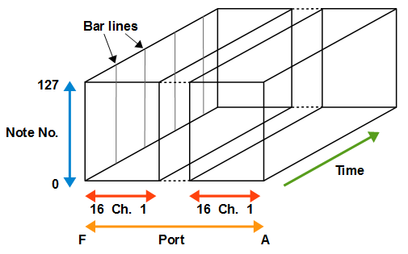
複数ポートを使用するMIDIデータを読み込んだ場合、未出力ポートを省略して表示します。
例えばポートA,C,Eに出力するMIDIデータの場合、ポートA,C,Eを隣接させて表示し、
ポートB,Dは省略します。
(b) ピアノロールレインの三次元可視化方式
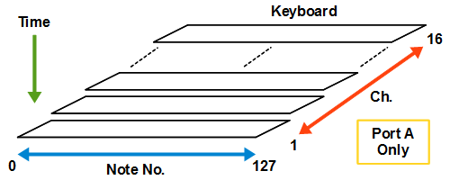
複数ポートを使用するMIDIデータを読み込んだ場合、現状はポートAのキーボードのみが表示されます。
ピアノロールバーは全ポート分が表示されます。
MIDITrailは修正BSDライセンス（BSD 3-Clause License）を適用して公開しています。
詳細は COPYRIGHT.TXT および LICENSE.TXT を参照してください。
変更履歴は CHANGELOG.md を参照してください。